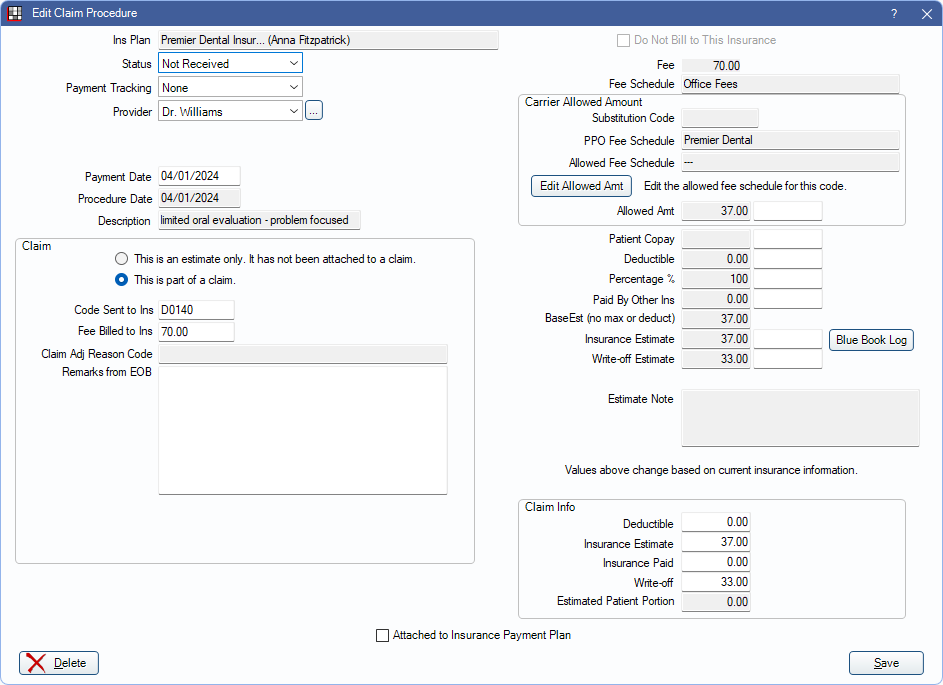
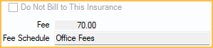
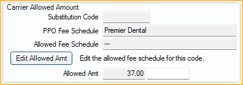
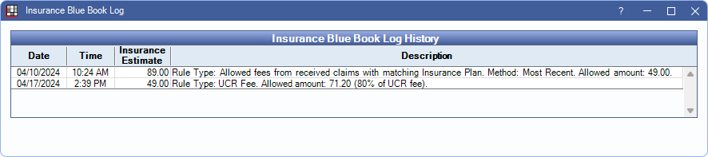

Claim Procedures ( claimprocs )
View and edit details of a procedure attached to an insurance claim or estimate from the Edit Claim Procedure window.
In a Claim, double-click on a procedure.
Alternatively, in the Procedure - Financial Tab double-click an estimate.
A claim procedure (claimproc) is used for the following purposes:
- To attach procedures to claims.
- To split insurance payments on claims.
- To record total insurance payments on claims. These payments are not attached to procedures.
- To store insurance estimates before a claim is created.
In a typical situation:
- While treatment planning, a procedure is created.
- A claimproc is automatically added to the procedure to keep track of its estimated insurance portion. Change the estimate by editing the claimproc.
- When the claim for the procedure is created, the claimproc links the procedure to the claim.
- When viewing the claim detail, all procedure estimates and payments are stored in the claimproc rather than with the procedure. This allows for an unlimited number of claims to be sent for each procedure and users to have very fine control over all estimates and payments for each claim.
- When receiving a claim, it can be itemized by procedure or entered as a total payment.
Miscellaneous Information

Ins Plan: Displays the insurance carrier and subscriber name. Claimprocs are always associated with one insurance plan whether they are an estimate or attached to a claim.
Status: The status of the claim procedure.
- Estimate: Not yet attached to a claim. Claim Info section is not shown. Estimates never affect the patient balance.
- Not Received: Attached to a claim with a status other than Received.
- Received: Attached to a claim with a Received status. Should also be attached to an insurance payment (finalized).
- PreAuthorization: Attached to a Preauthorization.
- InsHist: Procedure was created by adding a date to Insurance History.
- Supplemental: Indicates an additional payment on the same procedure. Estimates are generally 0. Almost identical to Received.
- For Capitation ( HMO / DMO ) Insurance Plan, the statuses below apply:
- CapClaim: Since most capitation procedures are not sent to insurance there are always duplicate claimprocs for a procedure (similar to Supplemental). The first claimproc tracks the copay and write-off and is never attached to a claim (status is CapComplete). The second claimproc has a status of CapClaim.
- CapEstimate: Not yet attached to a claim or for a procedure that is treatment planned (TP). When procedure is completed, status can be changed to CapComplete but never to anything else.
- CapComplete: Only used when procedure is set complete. This stores the copay and write-off amounts. The copay is only there for reference; the write-off affects the balance. Never attached to a claim.
- (Adjustment: A hidden type set in the upper section of the Insurance Plan using a completely different interface.)
Payment Tracking: Document information about the payment of the procedure. Useful to track why payment was rejected. Customize options in Definitions: Claim Payment Tracking.
Provider: Provider attached to the claimproc. By default, this is the provider who performed the procedure, but can be changed to a different provider. This provider is assigned to any insurance payment. Click [...] to change. The provider can only be changed when the status is set to Not Received. See Claimproc Provider for more details.
Clinic: Only visible if the Clinics feature is enabled in Show Features. Normally the clinic assigned to the Procedure (e.g., treating clinic), but it can differ. This affects some reports.
Pay Entry Date: The date the related insurance payment was entered. Used to track account aging. Only displays after an insurance payment has been received.
Payment Date: Can be edited until attached to an insurance check. Once attached to an insurance check, see Finalize Insurance Payment to edit payment information.
Procedure Date: The date the procedure was performed. This is pulled from the Date attached to the Procedure. Used to track annual benefits used.
Description: The procedure code description.
Claim
To make changes to fields in this area, except Remarks from EOB, the claimproc must be opened by double-clicking the procedure from the Claim window.

This is an estimate only/This is part of a claim: Indicates if this claimproc is an estimate or has been attached to claim. If part of a claim, the following information is shown:
- Code Sent to Ins: The procedure code sent to insurance. Usually, it is the same as the actual procedure code but may be different if using alternate codes (e.g., for Medicaid), medical codes, or custom codes with suffixes that get removed before being sent.
- Fee Billed to Ins: Requires the Claim Procedure Fee Billed to Ins Edit Permission to edit. The amount billed to insurance.
- Normally, this is the same as the procedure amount billed to the patient, but it can differ.
- If Claims show UCR fee is checked on the Edit Insurance Plan window, the amount defaults to the provider's UCR fee.
- Claim Adj Reason Code: Read-only. Displays a Claim Adjustment Reason Code (CARC) if procedure-level adjustments from an ERA were applied.
- Remarks from EOB: EOB remarks explaining why insurance did not pay as expected on this procedure.
Fee Information
Do Not Bill to Insurance: Only used when the claimproc is an estimate. Indicates that this claimproc will remain an estimate and never be attached to a claim. Estimate information is hidden when this box is checked. This box is greyed out when the procedure is attached to a claim or preauthorization.
Fee: The actual fee billed to the patient as entered on the Procedure.
Fee Schedule: The fee schedule of the insurance plan listed first in the Family Module. If this is a medical procedure code, this fee schedule may not accurately indicate where the fee is pulled from.
Carrier Allowed Amount
Substitution Code: The Ins Subst Code entered for the procedure code. Used for situations like posterior composites, where the insurance company downgrades it to the rate of an amalgam.
PPO Fee Schedule: The Fee Schedule assigned to a PPO Plan Type insurance in the Edit Insurance Plan window.
Allowed Fee Schedule: The fee schedule assigned to Carrier Allowed Amounts on the Edit Insurance Plan window.
Allowed Amt: Insurance allowed fee (e.g., contracted fee). Frequently, insurance companies do not allow the full fee because they claim it is above UCR for the area. In these cases, enter the allowed fee that should be used for all calculations instead of the Fee.
- Changes to the allowed amount can be made for this claim only by entering a fee into the white box.
- If this is a PPO plan, an allowed amount may already be entered. Click Edit Allowed Amt to change the amount in the fee schedule.
- When entering Insurance Payments, there is also a column for allowed amounts, and these flow into the out-of-network fee schedule if one is assigned to the insurance plan (Edit Insurance Plan window, Carrier Allowed Amount).
- If using Blue Book, see the Blue Book Log for details on how the fee is determined.
Estimate Information
Changing information does not change the patient's balance. To update a patient's estimated balance and see updated estimates on a claim after making changes, click Recalculate Estimates in the Edit Claim window.

Patient Copay: For most plan types, based on the insurance plan's Patient Co-pay Amounts fee schedule.
- For capitation, this automates write-off calculation.
- For any other insurance, this amount is subtracted from what insurance is expected to pay.
For Fixed Benefit Plan Types, this Patient Copay is calculated as (Fee or Allowed Amt) - Fixed Benefit Amount. Fixed Benefit Amount is determined by the Fixed Benefit fee schedule assigned to the insurance plan.
Deductible: Indicates any Deductible amount applied to the estimate. The patient must pay this amount before insurance coverage is applied. This affects the Insurance Estimate and Patient Portion.
Percentage %: The percentage that insurance is expected to cover, based on a plan's benefits.
Paid By Other Ins: Adds up all amounts paid by insurance plans that are lower in order. For example, it never contains an amount if this is primary insurance. Enable Auto update secondary claim estimates when primary is received in Preferences to update this amount automatically.
BaseEst: Base insurance estimate before considering any deductible or maximums (e.g., annual max). Calculated as (Fee or Allowed) - Copay) x (Percentage or Percent Override)
Insurance Estimate: This value is the one shown in most places as the estimate.
- It depends on the order of treatment in the Treatment Plan.
- If the claimproc is already attached to a claim, this does not affect the patient balance The Insurance Estimate under Claim Info should be used instead.
- Frequency Limitations are not considered in this field, but other limitations and exclusions are. See the Estimate Note for additional information on what may be affecting the estimate.
Click Blue Book Log to open the Insurance Blue Book Log (see below).
Write-off Estimate: Usually only used for PPO plans. This is shown as a column in the Treatment Plan. Requires the Insurance Write-off Edit permission.
Estimated Patient Portion: The estimated amount the patient is responsible for after insurance estimate and write-offs (Fee - Insurance Estimate - Write-off).
Estimate Note: Contains automatically generated notes about maximums, limitations, exclusions, etc. that may affect the insurance calculations and also display in the Treatment Plan.
Claim Info
This section is only shown when the procedure is attached to a claim and can only be edited from within a claim.

Deductible: The actual deductible amount applied as reported by the insurance company.
Insurance Estimate: The official amount estimated to be paid. Affects patient balance. Gets copied from Insurance Estimate when claim is created. After that, it can only be changed manually.
Insurance Paid: The actual amount insurance paid on the procedure. Entered when receiving a claim. Cannot be edited once the procedure is attached to a check.
Write-off: Amount not covered by insurance that the office decides not to charge the patient. This is how Capitation is handled as well as assignment of benefits where provider has agreed not to charge above a set amount. Requires the Insurance Write-off Edit permission.
Estimated Patient Portion: The estimated amount the patient is responsible for after insurance and write-offs If the claimproc is Not Received, calculated as . If the claimproc is Received, calculated as Fee - Insurance Paid - Write-off.
Buttons
Attached to Insurance Payment Plan: This box is automatically checked if this claimproc's insurance payment is attached to an Insurance Payment Plan. This box can be checked manually if payment is entered first and an Insurance Payment Plan is created after the fact.
Delete: Remove the insurance estimate (claimproc) from a procedure.
- If the procedure is attached to a claim, this also removes the procedure from the attached claim.
- Claimprocs with a procedure date for the current (today's) date cannot be deleted. Mark the procedure as Do Not Bill to Ins from the Procedure - Financial Tab instead.
- Claimprocs for procedures with a procedure status of Treatment Planned cannot be deleted. Mark the procedure as Do Not Bill to Ins from the Procedure - Financial tab instead.
- The last claimproc cannot be deleted from a claim. The claim must be deleted instead.
Click Save to keep changes. Insurance estimates are updated when clicking Save from Procedure Info or clicking Recalculate Estimates on an associated Claim.
Blue Book
When Blue Book is enabled, the Blue Book Log button is visible. Click to see the history of the blue book fee for this procedure code.
The history of the fee is shown. As allowed amounts are entered, or manual fees change, they are logged here.